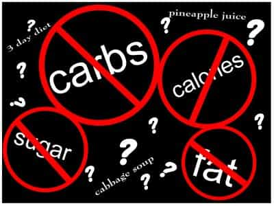

Contrary to popular belief, the fat acceptance movement has been around in the United States for some time, first being birthed in the 1960’s, when many, many discrete groups began to organize around identity politics. The movement is a strong mix of narcissism and female-centrism.

Consider a brief history of the movement. Like I have previously said, the first documented fat acceptance acceptance event happened in New York City in 1967. The participants dubbed it a “fat-in” at a restaurant and consumed many, many pints of ice cream. Later that same summer, the first nation-wide movement, which eventually become the National Association For The Advancement Of Fat People (NAAFA). This time period is generally referred to first-wave fat acceptance.
For a brief period of time, moving lockstep with other identity political groups, a militant arm of the movement coalesced into the “Fat Underground,” a radical feminist-allied movement whose rallying cry was, “a diet is a cure that doesn’t work, for a disease that doesn’t exist.” The movement never gained much steam as they called for violence against perceived fatphobia.
Accordingly, as American’s waistlines expanded, the movement gained ground. This time period has been called second-wave fat acceptance, as Americans needed explanations for their decreasing physical attractiveness & increasingly poor health. Mainstream outlets began to run some sympathetic literature, mostly just viciously attacking the medical establishment & perceived fatphobia of the media at large.
Fat acceptance is currently thought to be the in third wave, which coincides with the birth of the Internet & blogging. Tumblr, online feminist webzines & WordPress have been credited with advancing the cause.

The most accurate summary of fat acceptance dogma here.
Let’s review some of their more insistent claims. First, and foremost, is the concept that dieting & exercise don’t work. Given the multiplicity of posts on Return Of Kings about health and fitness, I will not talk about the veracity of the claim, just about the psychology presented. The claim that exercise & diet don’t work is just so absurdly wrong it begs for a reason why they cling to it. Part of this is the inability to accept responsibility for their weight gain – remember early fat acceptance warriors worked with radical feminists. These sorts of groups portended the nascent narcissism that would come to pervade identity politics in general, but markedly show off the sheer and utter inability of its adherents from truly changing their reality.
Consider that there are also people who are underweight. Fat acceptance types fold anorexia and related issues into their dogmatic and self-serving approach to weight issues, but they think that the underweight suffer from psychological issues. It is a delicate road to hoe, because they can’t just say that vastly underweight people are completely healthy, like they would claim a person 300 pounds overweight to be. Of course, it’s those poor, poor underweight folk that have psychological issues. Of course it is related to impossible beauty standards forced onto women by the heterosexist patriarchy. Notice, though, that fat acceptance claims the over- and under- weight suffer from psychological stigma by the media, yet only the underweight have to adjust their weight. You know, to become healthy again.
They are not seeking to decouple weight and health issues but to destroy the concept of being overweight. They want people to either considered healthy or underweight. It shows off neatly the psychology: it is all about them.
Take this study that is often bandied about in fat circles about the failure of dieting. A top comment on the article gets it right:
Why aren’t we looking at those who successfully lose the weight and keep it off for 2 or more years?
Of course, we should be looking for the success stories and understanding why they succeeded in the wake of others failing. What the commenter doesn’t understand is narcissism.
Take game-denialists. They desperately need stories of failure of so-called game adherents to fuel their psychology. They don’t want to hear stories of men pulling themselves up-by-their-bootstraps, they want to hear about some guy tripping over himself tying his boots while he relied on a technique given to him by a fraud. Who would you believe? A man who claims X, Y or Z is a fraud or a man that has achieved success and relates this personal stories, approaches and what his failures taught him?
That is the simple psychology of fat acceptance-activists and their denial of the science of dieting. Remember, if you are reading it, it is for you. Unable to bear hearing about successful dieting approaches, personal stories about weight loss or just seeing the photos of the so-called “weight privileged,” they demand media conform to their perceptions of their value. So people can’t keep the weight off for long periods of time? Sounds like a personal problem to me, not the diet’s problem. On the rare off chance it is a biological disorder, you will find that out from your doctor.
Babies are born being able to select physically attractive faces from those that are not. This damning evidence for the fat-acceptance movement, as fat faces are rarely considered attractive because fat is unattractive and, most importantly, alters attractive features. A healthy man with a strong jaw becomes an unhealthy man with a weak chin when he is fat.
Another serious issue is the insistence that fat people, as a discrete class, need to be consulted on public health policy that affects fat people. This is a curious claim, as it tries to democratize what is, essentially, a dogmatic movement based on narcissism. Any fat person who deviates from the dogma is not included in the movement. You think the spokesman for Subway “Jared” is a fat acceptance hero?
Most importantly, here, is the notion that being a member of a class somehow confers a level of perception that non-members cannot access. This is classic narcissistic armor and it is wholly untrue. This approach is most used to defend feminist claims of male privilege, it is also used to defend claims of racism and homophobia. Being a member of a discrete class does little beyond signify you belong to said class. Like anything else in life, what you do with that is determined by you. You may have great insights to provide, you may not. In your thoughts and ideas people will judge you for you have to offer.
Which feeds into the next point, is the fear of being judged that fat acceptance-activists wish to counter. Instead of encouraging positive traits in fat people (that aren’t related to you looking in the mirror and declaring yourself awesome), the main thrust is to change wider society so that they never have to confront their own issues. This never works for anybody. At the end of the day, you always have to close your eyes with no psychology to consider but your own.
Finally, a point is made that all humans deserve bodily autonomy. They consider decisions on being fat as relating to personal autonomy. That is a terrible approach, as it brings in the age-old liberal adage, “your autonomy ends where my feelings begin.” If you get fat, you will get medical issues and not just affect the appropriation of my tax dollars, but you will affect my life personally as you could have been a woman I married, but you are either too fat to be interesting or dead. You could have been my doctor, but you decided to major in Fat Studies and now are a professional fat-ass. You could say that is selfish of me, but how the hell can you convince somebody with low self-esteem to change because they clearly hate themselves? You aren’t fat and fierce, you are a pathetically privileged plus-sized person.
The serious issue with “your autonomy ends where my feelings begin” approach is that there is rarely an action one can take that does not affect somebody else. I am not sure there are any actions of consequence that be undertaken that will not affect at least one person. Exercising autonomy often implicates limiting other’s options – to pretend otherwise is ludicrous.
![[Image: fatacceptance.png?w=502&h=630]](../living400lbs.files.wordpress.com/2013/01/fatacceptance.png%3Fw=502&h=630)
Fat acceptance has a long history in the United States, but only recently exploded as left-wing friendly platforms such as Tumblr and Reddit began to become popular.
The claims made reek of a supreme level of privilege, as only people in a late-capitalist society could possibly be able to complain about their poor choices in diet and exercise need to be validated by authority figures in the media. Not only that, but they are not seeking simply acceptance, but worship. While some some of the talk revolves around body equity with skinny people, the true end-goal is with referring to fat as “beautiful.” They are not seeking to be seen as average, but as gorgeous and models. Sure, they lash out defensively talking about their intense self-hatred and poor body image, but that is attention-seeking behavior to get others to worship their looks and reaffirm their personal delusions about attractiveness and sexual value.
While movements like this are part and parcel of any narcissistic society — notice it started in the 60’s with other identity-based movements — the truth it is woefully misinformed about basic science and biology. It exists as a stopgap between the fat activist’s own self-hatred and their complete inability to change. They need defenses to exist in order to deny any true change of the self.
I have no doubt that people exist that are completely happy with being overweight. Those people would never identify with the fat acceptance movement.
 If you like this article and are concerned about the future of the Western world, check out Roosh's book Free Speech Isn't Free. It gives an inside look to how the globalist establishment is attempting to marginalize masculine men with a leftist agenda that promotes censorship, feminism, and sterility. It also shares key knowledge and tools that you can use to defend yourself against social justice attacks. Click here to learn more about the book. Your support will help maintain our operation.
If you like this article and are concerned about the future of the Western world, check out Roosh's book Free Speech Isn't Free. It gives an inside look to how the globalist establishment is attempting to marginalize masculine men with a leftist agenda that promotes censorship, feminism, and sterility. It also shares key knowledge and tools that you can use to defend yourself against social justice attacks. Click here to learn more about the book. Your support will help maintain our operation.
{kind=link}